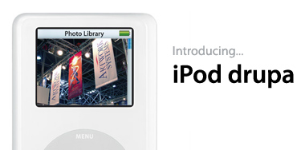

iPod drupa
vrijdag 17 december 2004 | Persoonlijk
Vanavond op het kerstfeestje van Artwork Systems had het management wel een heel bijzondere verrassing in petto. De monsterbeurs Drupa was dit jaar zo’n geweldig success voor het bedrijf, dat alle personeelsleden als dank een iPod photo cadeau krijgen!
Tot mijn grote frustratie, was ik hiervan al een week of drie op de hoogte doordat ik ons logo moest aanleveren voor de laser-gravure op de achterzijde van de apparaatjes. Een vreselijk geheim om te dragen, maar het is gelukt! Aiai, ik ga het mogen horen maandag…

JefPober op 18 december 2004
woah, zo’n management wil ik ook wel